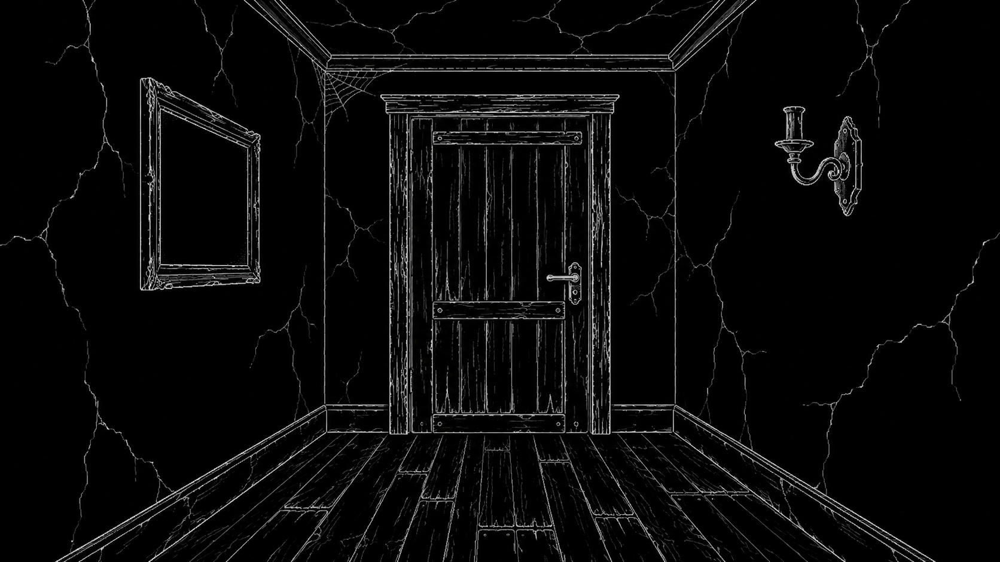

Saída
A porta da frente é a rota de fuga, mas antes é preciso descobrir o código e repetir a sequência de sinais dos dutos.
Na parede há também um espelho escuro. O medalhão pode abrir um final diferente, se o jogador decidir entregá-lo.
As escolhas finais são fugir, ficar na casa ou fazer o pacto com a Sombra.
Tentar escapar